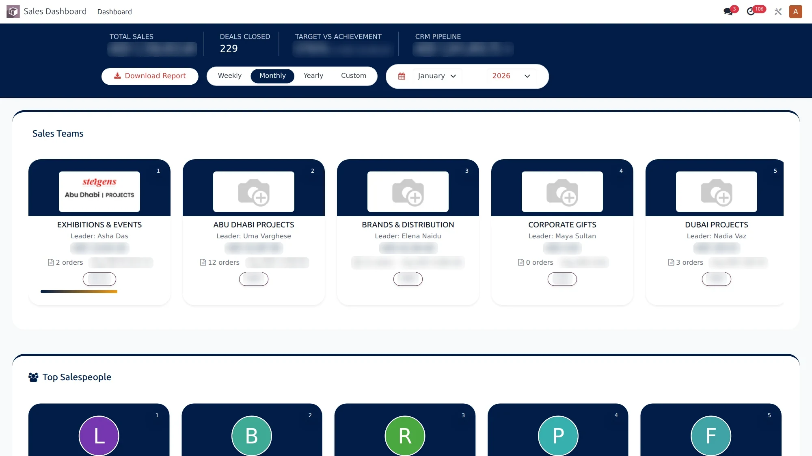
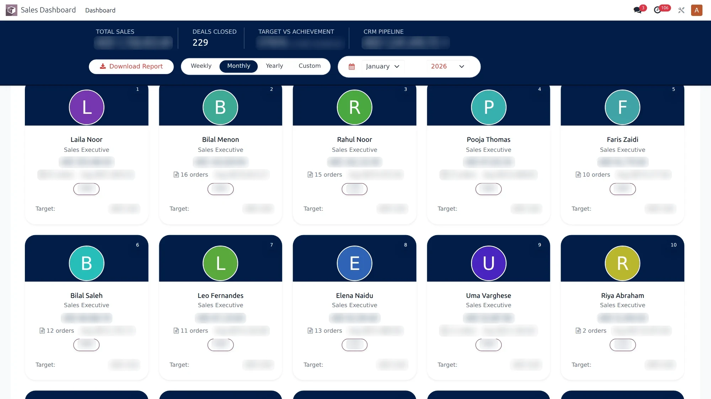
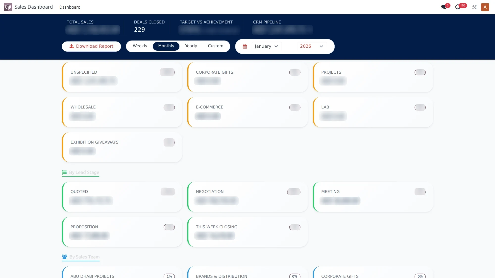
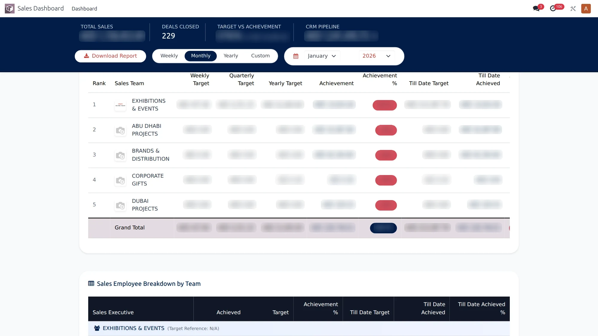

App 02 · Sales
One live view of company sales, team targets and each salesperson's incentive, replacing the monthly spreadsheets. Access is by role, from the director down to each executive.

Captured from the real module on an anonymised copy of the database. Names are fictional, and confidential figures are blurred. Click any screen to enlarge it.
Company KPIs for the month (total and eligible sales, deals, target vs achievement, pipeline) and ranked sales teams.
Top salespeople leaderboard; every card opens that person's drill-down.

CRM pipeline split by opportunity type and by lead stage.

Team performance: weekly, quarterly, yearly and till-date targets against achievement.
